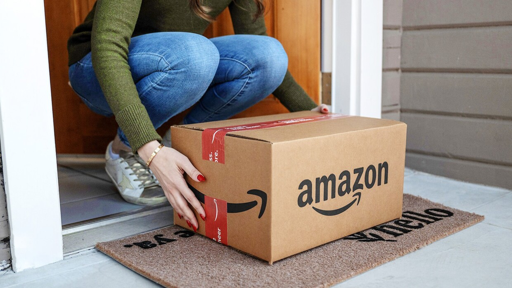

Amazon
Amazon se guía por cuatro principios: la obsesión por el cliente, la pasión por la innovación, el compromiso con la excelencia operativa y el pensamiento a largo plazo. Nos esforzamos por ser la empresa más centrada en el cliente del mundo, la mejor empleadora y el lugar más seguro para trabajar. Las opiniones de los clientes, las compras en un solo clic, las recomendaciones personalizadas, el servicio Prime, la Logística de Amazon, AWS, la autopublicación Kindle Direct Publishing, Kindle, el programa de formación Career Choice, los dispositivos Fire, Fire TV, Amazon Echo, Alexa, la tecnología Just Walk Out, Amazon Studios o The Climate Pledge son algunos ejemplos en los que Amazon ha sido pionera.
Amazon, cumplida su mayoría de edad, confirma con sus resultados (en 2016 el minorista se convirtió en “la compañía que más rápidamente ha logrado alcanzar los 100 billones de dólares con sus ventas”, según publicaba Inc.) que las decisiones de liderazgo de este emprendedor son las que han llevado la compañía al éxito.
Amazon es una empresa de comercio electrónico estadounidense que vende una amplia variedad de productos y servicios:
- libros.
- electronica.
- ropa.
- dispositivos.
- servicios de streming.
Valores:
- Innovacion constante.
- Excelencia Operativa.
- Compromiso a largo plazo.
- Diversidad e inclusion.
Amazon.com Inc es una empresa de origen estadounidense fundada en el año de 1994 un 5 de julio por Jeff Bezos.